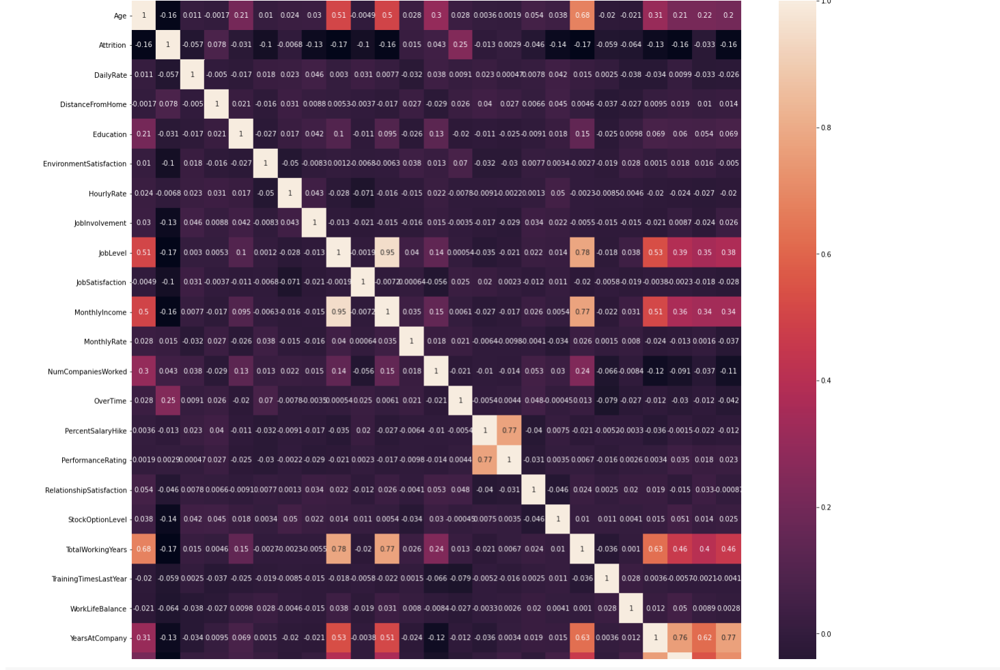
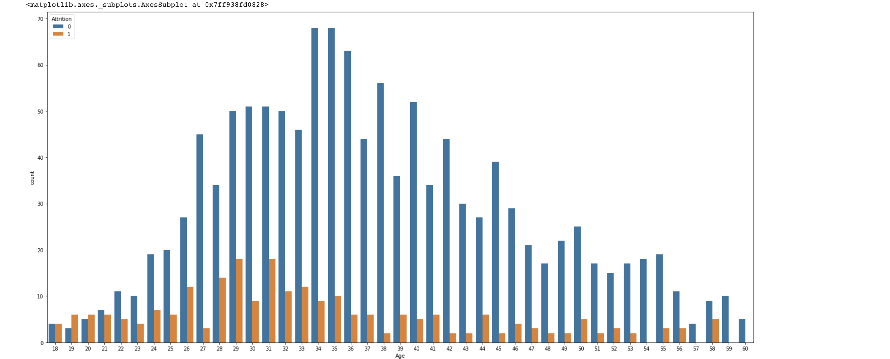
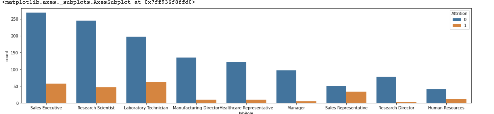
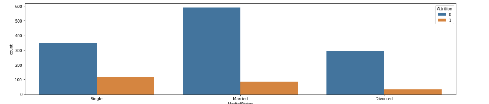
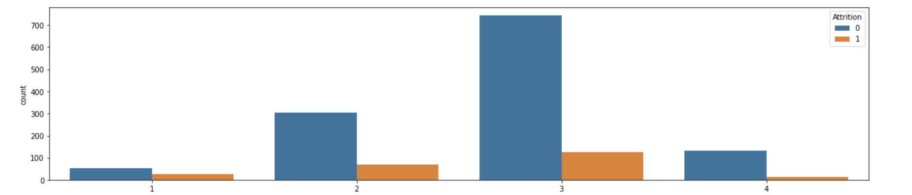
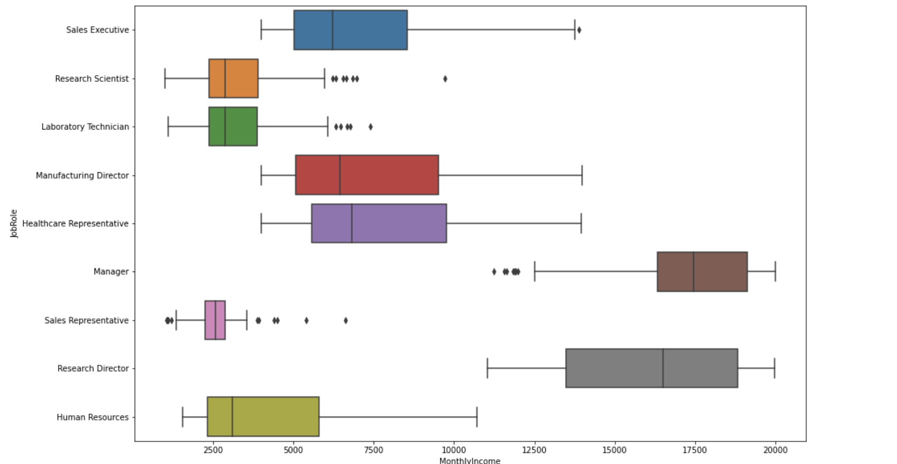
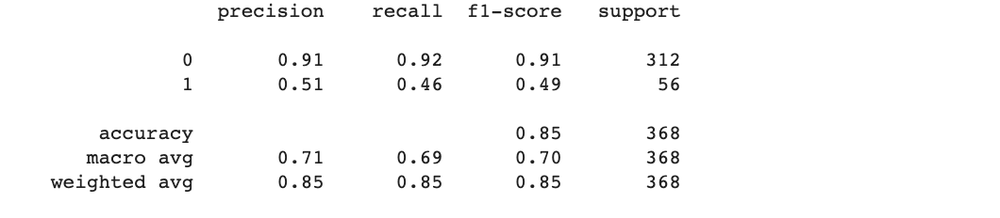

HR Analytics
Problem Statement
Predict the likelyhood to quit employee
I have taken the smaple from large data set and use subset of features
- Our simple dataset contains a few attributes for each person such as
- Job Involvement, Education, Job Satisfaction, Performance Rating, Relation ship satisfaction, Work life balance
Goal
- To use this info to predict the likely hood to quit employee
Data Collection
- Collect data from different sources
- Merge data from different data sources
Data Reading
- Read the sample data using panas
- There are following features that is subset of the full feature of original data set
- Age
- Attrition
- BusinessTravel
- DailyRate
- Department
- DistanceFromHome
- Education
- EducationField
- EmployeeCount
- EmployeeNumber
- EnvironmentSatisfaction
- Gender
- HourlyRate
- JobInvolvement
- JobLevel
- JobRole
- JobSatisfaction
- MaritalStatus
- MonthlyIncome
Exploratory Data analysis
- Number of employees who left the company = 237
- Percentage of employees who left the company = 16.122448979591837 %
- Number of employees who did not leave the company (stayed) = 1233
- Percentage of employees who did not leave the company (stayed) = 83.87755102040816 %
- Data is highly imbalance
Corelation plot among features
Age Analysis
- The distributation is look like normal but it is not exactly norml
- The employee has more age seems not to quite company
- The employee has less age tends to quite company frequently
Analysis for Job Role, Marrital Status, Job Involvement, Job Level
  - Reseracher, Manager and health directors are more tends to quite job
- Single people tends to quite job in comparision of Married and Divorced
- Higher job level tends to quite job
- It is not clear whihc employee tend to quite job when they have distance from office
- Employee income is right skewed
- Some employee has huge income
- Mean employee income is 5200
Employee income by job role
- Researchers director, manager have very high income
- Sales person has very less salary
- Laboritory Technician and Scientist has same salary although they have some oulier
Data Split
- Split the data set into train, test and validation set
- Train set used to train the model
- Validation set used to Bias-variance tradeoff
- Test Set is used to test the model performance
Models That i used
- Logistic Regression
- Randomforest
- XGBoost
- AdaBoost
- Deep Learning Model with high Drop rate and tried different architure and different optimiser
Deep learning Model is the best
- © Untitled
- Design: HTML5 UP